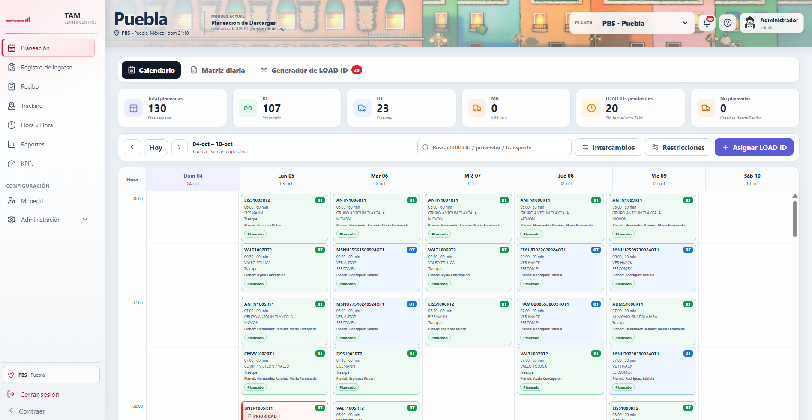
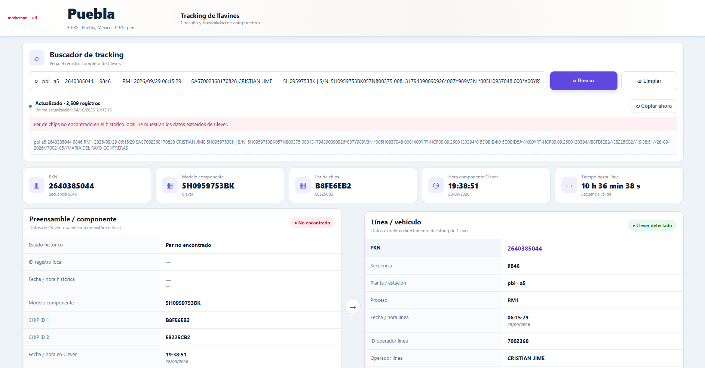
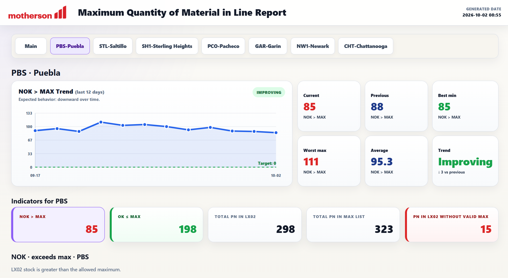
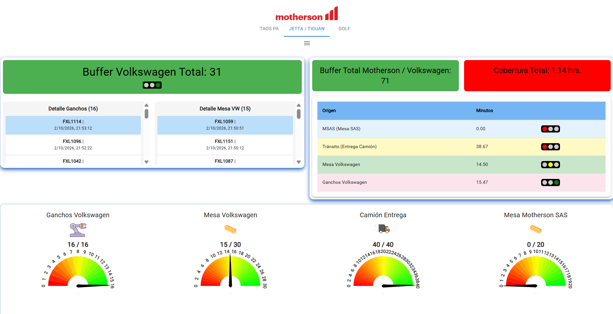

AUTOMATIZACIÓN · SOFTWARE · LOGÍSTICA
Automatización,
software y logística.
Soluciones digitales para planta, datos y operación.



PROYECTOS
Aplicaciones reales
Proyectos desarrollados para resolver problemas de operación, logística, trazabilidad, calidad y análisis de datos.
PROYECTO DESTACADO
TAM Center Control
Problema
Solución
Resultados
TRAZABILIDAD EN PLANTA
Tracking de Llavines
La interfaz real permite consultar registros de Clever, PKN, chips, modelo de componente, tiempo a línea y trazabilidad del ensamble.
Buscador de trackingPreensambleLínea / vehículoHistórico
PreensambleRegistro de chips
ValidaciónHistórico local
LíneaVinculación PKN
ResultadoTrazabilidad
EXPERIENCIA
Industria + desarrollo
Experiencia profesional en procesos logísticos y productivos, programación, automatización y mejora continua.
Ingeniero de Procesos Logísticos y Productivos
Motherson SASDesarrollo de aplicaciones web, alertas de inventario, optimización de procesos, Lean Manufacturing, poka-yokes, balanceo y proyectos de mejora.
Programador
JG PROINDUSAProgramación de PLC, TIA Portal, integración de drivers, trazabilidad, EPLAN, secuencias automatizadas y sistemas de visión Keyence.
Programador PLC / Automatización
SIATSAPLC Siemens, Delta y Allen-Bradley, tableros eléctricos, control analógico, neumática, sensores y automatización de mesas de calidad.
PERFIL
Ingeniería Mecatrónica aplicada a operaciones reales
Mi perfil combina procesos, software y automatización. Eso me permite entender el problema físico u operativo y desarrollar la herramienta digital que lo acompaña.
STACK
Tecnologías
Herramientas usadas en software, automatización, infraestructura y análisis.
BOT + API
QAssist
Proyecto de asistente para calidad con integración de bots de Telegram, flujo conversacional, API y almacenamiento estructurado.
Telegram BotPythonFastAPISQLite
QAssist BotTelegram
CONTACTO
¿Trabajamos en algo increíble?
Disponible para oportunidades relacionadas con automatización, software industrial, logística, procesos y transformación digital.
aaronrezaramirez2@gmail.com+52 221 759 9518Puebla, Pue.
GitHubgithub.com/aarom-code